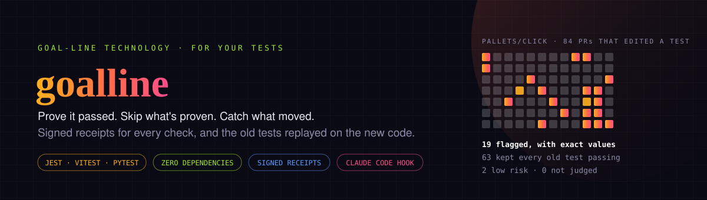

Did your coding agent fix the code, or the test?
goalline is a free, open source command-line tool and GitHub Action for teams that use AI coding agents. It runs the old version of every test a change edited against the new code. When an old test fails, behaviour changed and the test was rewritten to match, and you see exactly what moved, with the old and new values. It also keeps a signed receipt for every check, so nothing that already passed on the same code has to run again.
View on GitHub GitHub Marketplace How it worksThe problem
Coding agents are known to change the test instead of fixing the code. ImpossibleBench (Zhong, Raghunathan and Carlini, 2025) puts it plainly: "an LLM agent with access to unit tests may delete failing tests rather than fix the underlying bug".
When a pull request edits the code and its test in the same diff, the suite passes either way. A green check can't tell you whether behaviour changed. goalline can.
What it catches
A change made add(2, 3) return 6 and edited its test's 5 to 6, so every check is green. goalline runs the old test on the new code. This is its real output:
goalline goalpost · example · base main (merge-base 62fac20) → head 94ac494
Old versions of 1 edited or deleted test file(s), run on the new code.
MOVED test/add.test.mjs
1 of 1 old tests fail on the new code
✗ adds two numbers: Expected 5, received 6
FLAGGED (1 moved). Old tests no longer pass on the new code: behaviour changed and the tests were edited to match. A person should confirm that was intended.Prove, skip, catch
| Commands | What you get | |
|---|---|---|
| Prove | run · verify | A signed receipt every time a check runs, tied to the exact code it ran on (the git tree). verify says which gates already passed on this code without re-running anything. |
| Skip | run --reuse · --rules · --input | Skip a gate this exact code already passed. Rules carry a pass over changes that can't affect the gate, --input db=pg keeps the database schema on the receipt, and a pass that read the real clock counts only until midnight. |
| Catch | goalpost · prove-red · guard · history | Old tests on new code, new tests that must fail on the old code first, a Claude Code Stop hook, and all of it replayed on your merged pull requests. |
Jest, Vitest and pytest are judged test by test; any other command file by file. Zero dependencies.
On 400 real pull requests
On the last 200 merged pull requests of pallets/click and pallets/jinja, 126 edited an existing test and 31 were flagged, each with its old and new values. Every flag was a deliberate change that its PR explains in one line, and 4 changed what users see without the changelog saying so. A flag is not a bug report: it means a person should look.
On every pull request
The GitHub Action puts the card on the job summary (on the Marketplace):
name: goalline
on: pull_request
jobs:
goalpost:
runs-on: ubuntu-latest
steps:
- uses: actions/checkout@v4
- uses: actions/setup-node@v4
with:
node-version: 20
- run: npm ci
- uses: intikhab49/goalline@v0
with:
command: npx jest {files}Inside Claude Code
As a Stop hook, goalline guard keeps the agent working while an old test expectation no longer holds, until it restores the behaviour or says why the change is intended. In .claude/settings.json:
{
"hooks": {
"Stop": [
{
"hooks": [
{ "type": "command", "command": "goalline guard --hook --base origin/main -- npx jest {files}", "timeout": 600 }
]
}
]
}
}Quick start
Node 20+ and git, nothing else. Run it from a checkout whose dependencies are installed:
# What would it have flagged on your last 200 merged PRs? (writes goalline-history/report.md)
npx github:intikhab49/goalline history --from-git -- npx jest {files}
# One change, before you merge it: old tests on the new code
npx github:intikhab49/goalline goalpost --base origin/main -- npx jest {files}
# Vitest: -- npx vitest run {files}
# pytest: -- python -m pytest {files}Guides
- How to tell if an AI coding agent edited a test to make it pass: old tests on new code, the verdicts, and what it can't catch
- Stop Claude Code from editing tests to pass: a Stop hook that won't let the agent finish until it explains a moved test
- A GitHub Action that catches tests edited to pass: one step in a workflow, with Jest, Vitest or pytest
- Check that new tests fail on the old code: new tests must fail on the base code first, or they test nothing
- Skip CI tests that the exact same code already passed: signed receipts keyed by the git tree, and safe reuse
- Test caching that notices when the database schema changed: the database schema on the receipt, with --input db=pg
- Find the tests that read the real clock: which tests read the real clock, and passes that expire
- Replaying 400 merged pull requests of pallets/click and pallets/jinja: 31 flags on 400 merged PRs, each with its PR's reason
- goalline command reference: every command and option
FAQ
How do I know if an AI coding agent changed a test to make it pass?
Run the old version of every test the change edited against the new code. If an old test now fails, behaviour changed and the test was rewritten to match. goalline goalpost does exactly that and shows the old and new values, for example Expected 5, received 6.
Why doesn't CI catch a test that was edited to pass?
Because CI runs the new tests on the new code. When a change edits the code and its test in the same diff, the suite passes either way, so a green check can't tell you whether behaviour changed.
Is a flagged pull request a bug?
No. A flag means a person should look. On the last 200 merged PRs of pallets/click and pallets/jinja, all 31 flags were deliberate changes, and 4 of them changed what users see without the changelog saying so. goalline shows exactly what moved, so the reviewer can confirm it was intended.
Does goalline use AI or an LLM?
No. It runs your own test runner on two versions of your code and compares the results. No source code leaves the machine.
Which test runners does goalline support?
Jest, Vitest and pytest are judged test by test. Any other command is judged file by file, by its exit code.
How do I stop Claude Code from editing tests to pass?
Add goalline guard --hook as a Claude Code Stop hook. Before the agent may finish, the old tests it edited run against its work; a moved expectation sends it back to work until it restores the behaviour or records why the change is intended.
How do I check that a new test actually tests the change?
Run it on the code before the change: it should fail there. goalline prove-red runs every test a change adds against the base code and flags any that already pass.
Can CI skip tests that already passed on the same code?
Yes. goalline run --reuse keeps a signed receipt for every run, keyed by the git tree, and skips a gate that exact code already passed. With --input db=pg, a change to the database schema means it runs again, and a pass that read the real clock counts only until midnight.
Does goalline handle tests that depend on the current date?
In Node, yes. During goalline run, it counts the reads of the real clock (Date.now(), new Date()) that your own tests and code make under Jest, Vitest or node --test, including fake timers left at the real time; fake timers set to a fixed time don't count. A pass that read the clock counts only until the next midnight (or --clock-ttl), so a cached pass never stands in for another day.
Does goalline catch hard-coded answers?
No. It catches tests that were edited, not code that special-cases the test's inputs. Hard-coded answers still need hidden tests or mutation testing.
What does goalline cost, and what does it need?
It is free and open source (MIT). It needs Node 20 or newer and git, and has zero dependencies: npx github:intikhab49/goalline help runs it without installing anything.